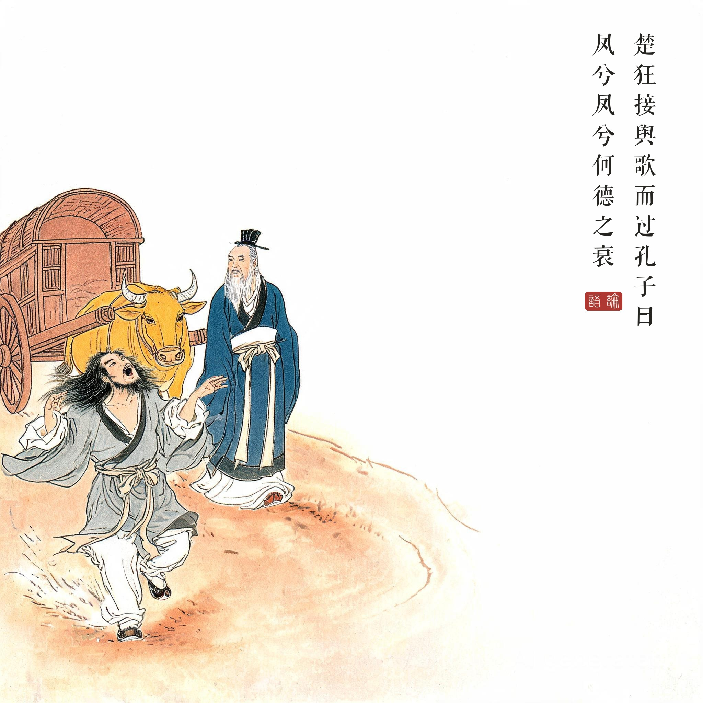
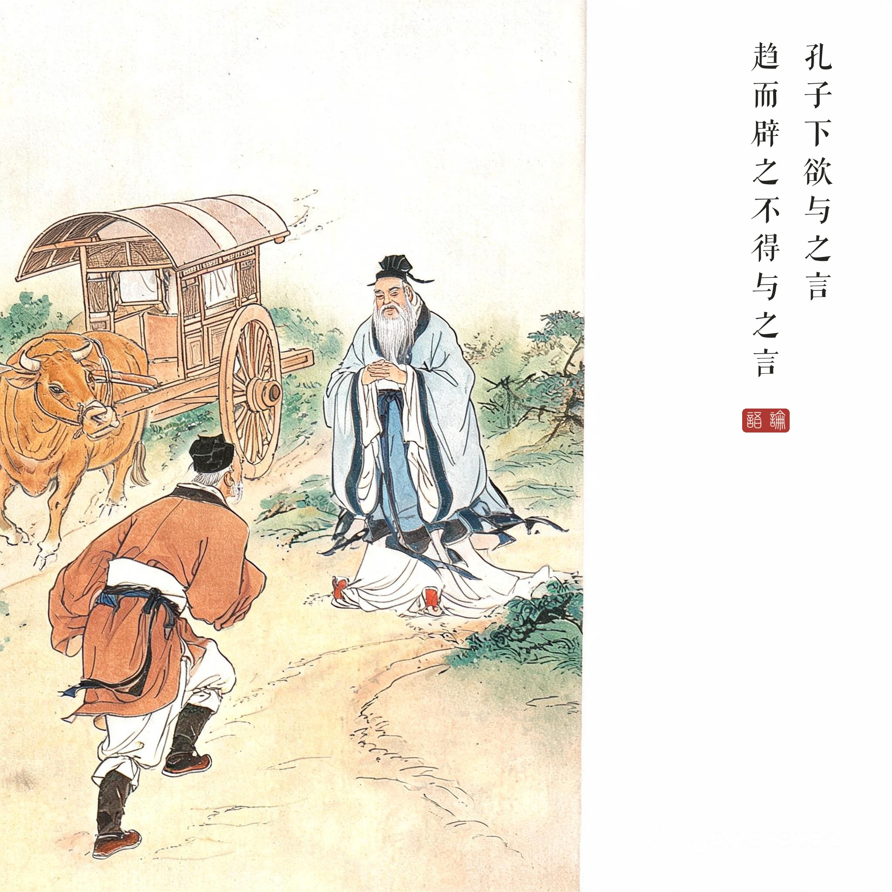
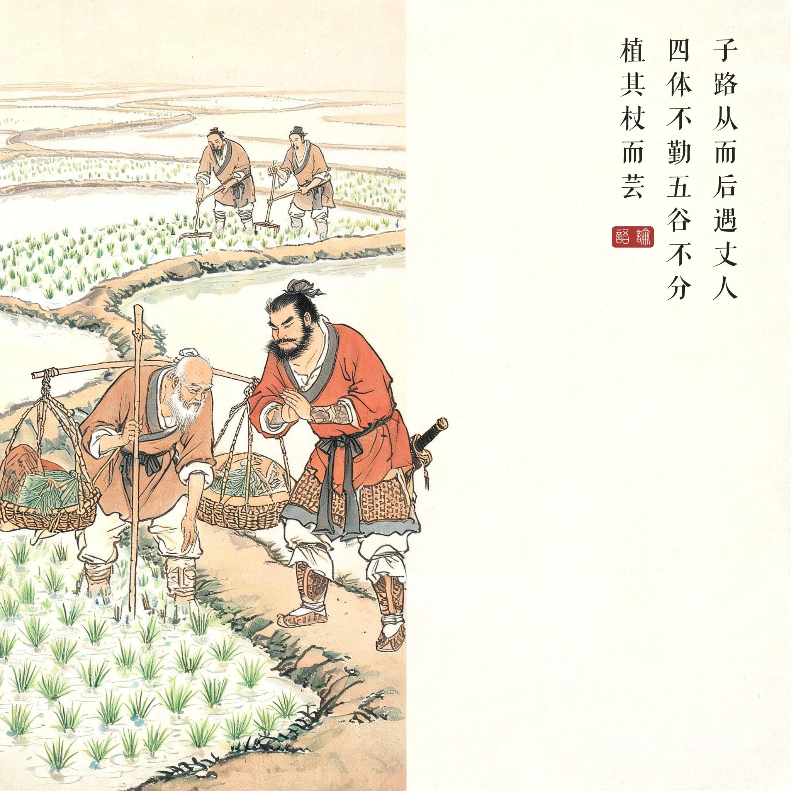

《论语 · 微子第十八》接舆章与荷蓧丈人章。《论语》原文"以杖荷蓧"，蓧（diào）为除草竹器；本册底本此字脱失，故题款取同章"植其杖而芸"句入画。
（据 daizhigev20《论语》底本节录，题款诸句见组画清单）
楚国的狂人接舆唱着歌经过孔子车前："凤啊凤啊，你的德行为何这般衰微？过去的无法挽回，未来的还来得及。算了吧，算了吧，如今从政的人危险啊！"孔子下车，想同他说话——接舆快步避开，没能谈成。
子路随行落了后，遇见一位拄杖担着农具的老人。子路问：您见到我老师了吗？老人说：四肢不劳动，五谷分不清——谁是你的老师？说完把手杖插在地上锄草。子路拱手立着。老人留子路宿，杀鸡做饭，引两个儿子相见。次日子路赶上汇报，孔子说：这是位隐者。让子路回去看——到时老人已走了。子路说：不做官是不义的，长幼之节不可废，君臣之义怎能废弃？只想洁身自好，却乱了君臣大伦。君子出仕，是行他的义——道之不行，早已知道了。
狂者的歌与行者的路。接舆之歌楚辞《楚狂接舆歌》直接入《庄子 · 人间世》，成为道家文献的核心意象；而子路转述的"君臣之义"是儒家对隐者的最终答复——双方在《微子》篇里完成了中国思想史上最著名的一次擦肩。孔子并不否定隐者的人格——他叹"隐者也"、称荷蓧丈人"欲洁其身"——他否定的是把独善当作可以放弃兼济的理由。
狂歌的政治学。"今之从政者殆而"是对春秋末世权力游戏的总判决。凤的比喻极重：灵鸟非梧不栖、非竹实不食——德衰则不当出，而孔子仍周流四方。李白诗"我本楚狂人，凤歌笑孔丘"正是站在接舆一边；而杜甫"致君尧舜上"是站在孔子一边——李杜之别，恰是这场千年擦肩的延续。
读画小识。第一幅狂士过车：接舆散发披衣、且行且歌，夫子在车中闻声回望；第二幅夫子下车拱手、接舆趋步避走——两幅连续的动作对，把"欲与之言"与"不得与之言"画成一个回合；第三幅植杖芸田：老人俯身锄草的动作与子路拱立的姿势一俯一立，题眼在"四体不勤五谷不分"的当面回答。
用字说明。《论语》底本微子篇此章原句"以杖荷蓧"，本册所用古籍库底本该字位脱失，故题款取同章"植其杖而芸"句入画，异文处理见制作说明。